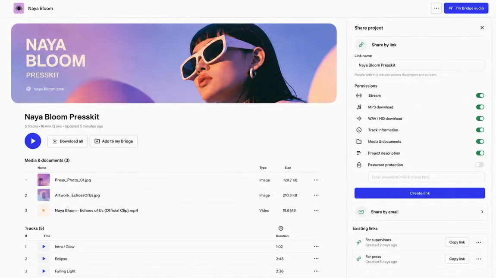

01
Même simplicité au départ
Déposez vos médias, créez un lien et partagez-les. Bridge Free permet déjà de commencer.
Dropbox, Box et Google Drive stockent et partagent vos fichiers. Bridge fait aussi cela pour vos médias compatibles, puis vous permet de les écouter, les retrouver, les présenter et les faire découvrir dans un environnement conçu pour la musique.
Un Drive reste souvent idéal pour les documents et la synchronisation générale. Bridge prend le relais quand vos fichiers deviennent un catalogue musical partagé entre artistes, équipes et destinataires professionnels.

Les mêmes gestes pour commencer, mais beaucoup plus de valeur une fois les morceaux reçus.
Déposez vos médias, créez un lien et partagez-les. Bridge Free permet déjà de commencer.
Écoutez et parcourez des titres dans un projet clair, sans devoir reconstituer le contexte.
Tags musicaux dès Free ; recherche intelligente par prompt et similarité selon le plan.
Smart Inbox, partage collaboratif, suivi des écoutes sur les plans adaptés et Hubs optionnels.
Sur un Drive, on ouvre généralement un fichier ou un dossier. Sur Bridge, on découvre un projet musical : on lance l'écoute, on parcourt les titres et on retrouve les informations utiles au même endroit.
Dropbox, Box et Google Drive disposent eux aussi de prévisualisations. La différence porte sur l'expérience de présentation et de travail musical.

Synchroniser de gros volumes, collaborer sur des documents, administrer les accès et connecter ses outils bureautiques : les plateformes généralistes sont souvent les plus adaptées.
Pour des catalogues musicaux, Bridge réunit écoute, métadonnées, Smart Inbox, projets et recherche spécialisée. Les fonctions avancées et l’exposition via les Hubs dépendent du plan et des options.
Choisissez le concurrent à examiner sur mobile, ou parcourez les quatre colonnes sur desktop. Chaque outil conserve ses propres avantages.
En résumé : Dropbox est particulièrement adapté à la synchronisation et au partage de fichiers ; Box, à la gestion documentaire et aux équipes structurées ; Google Drive, à la coédition et à l'écosystème Google. Bridge.audio est le choix spécialisé pour gérer, écouter, rechercher et présenter un catalogue musical, avec une Smart Inbox et des fonctions de recherche musicale avancées selon le plan.
Fonctionnalités à vérifier selon les offres : Dropbox, Box, Google Drive et Bridge.audio. Les fonctions d’IA avancées peuvent dépendre des abonnements ou modules.
Plutôt que multiplier les outils, gardez un parcours continu. Captures réelles de Bridge.audio.
Quatre offres gratuites, mais pas la même vocation : les Drives proposent des gigaoctets ; Bridge propose un premier Workspace musical.
2 Go de stockage de fichiers
10 Go, fichiers jusqu’à 250 Mo
15 Go partagés avec Gmail et Photos
50 titres, 3 membres, projets illimités, Smart Inbox, partage basique et auto-tagging de base.
Bridge Free est conçu pour démarrer avec un catalogue musical, pas pour offrir autant d'espace de stockage généraliste. Les prix et capacités sont susceptibles d'évoluer ; consultez les pages officielles avant de choisir.
Bridge Talent Pro démarre à 5 €/mois, Music Pro à 9 €/mois (options et limites selon configuration). Les prix payants de Dropbox, Box et Google Workspace dépendent du pays, du nombre d'utilisateurs et de la facturation : voir les tarifs Dropbox, Box, Google Workspace et Bridge. Free : Google 15 Go ; Dropbox 2 Go.
Pour la gestion musicale, Bridge peut remplacer plusieurs usages courants : centraliser, recevoir, écouter et partager des fichiers compatibles. Pour la bureautique, la synchronisation générale et les archives volumineuses, Dropbox, Box ou Google Drive restent souvent complémentaires.
Oui. Dropbox propose notamment Dash, Box dispose de Box AI et Google Drive de Gemini. La différence de Bridge est l’enrichissement et la recherche spécifiquement musicaux : auto-tagging musical, recherche par prompt et similarité dans les offres Pro.
Oui. Le plan Free de Bridge inclut une Smart Inbox, les partages de base et jusqu’à 50 titres dans le Workspace, avec trois membres. Les capacités et fonctionnalités avancées évoluent selon l’offre.
Bridge permet de présenter des morceaux dans des projets avec un lecteur audio. Dropbox, Box et Google Drive permettent également la prévisualisation de nombreux formats. La différence réside dans la présentation, les métadonnées et le workflow musical.
Dropbox, Box et Google Drive restent souvent plus adaptés aux sauvegardes générales, à la bureautique et aux fichiers très variés. Bridge convient mieux à un catalogue musical à rechercher, pitcher et exploiter, avec des limites de titres et médias liées à son abonnement.
Non. Le plan Free ne donne pas accès aux Discovery Hubs. Les offres payantes permettent des options de visibilité selon l’éligibilité, la configuration et les conditions commerciales applicables.
Le versioning à venir chez Bridge n'est pas présenté comme disponible. La publication sur les Discovery Hubs est optionnelle, soumise à conditions, et absente du plan Free. Bridge n'est pas une suite bureautique générale ni un remplacement universel des systèmes de synchronisation et de gouvernance documentaire. Sources vérifiées le 22 novembre 2026.
Commencez gratuitement avec un Workspace, une Smart Inbox et un catalogue qui se parcourt vraiment comme de la musique.